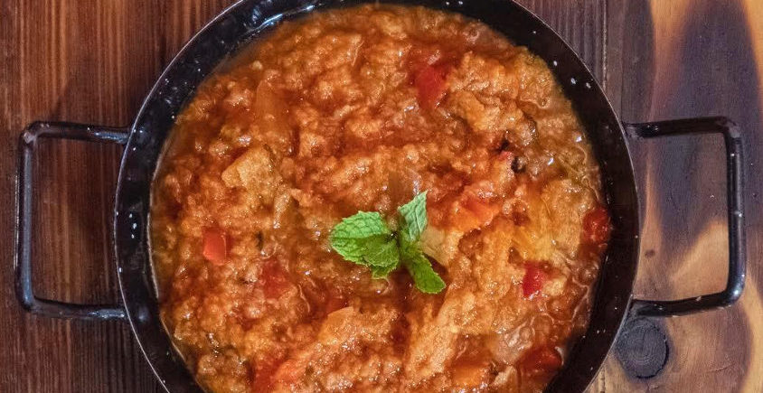
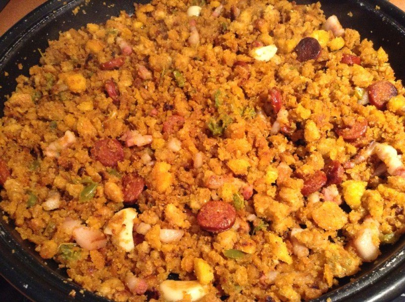
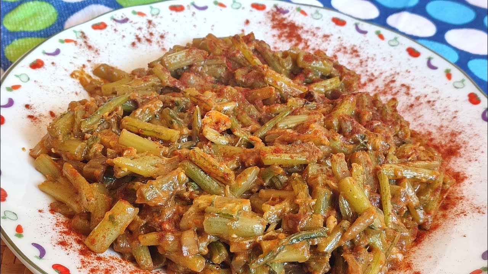

Recetas típicas

Sopa de tomate
La sopa de tomate es una receta tradicional de los Pueblos Blancos, sencilla y muy sabrosa.
Ingredientes
- Tomates maduros
- Pan asentado
- Ajo
- Aceite de oliva
- Sal
Preparación
- Sofríe el ajo en aceite.
- Añade los tomates troceados.
- Incorpora el pan y deja cocer.
- Tritura y sirve caliente.

Migas
Las migas son un plato contundente y muy popular en la sierra gaditana.
Ingredientes
- Pan duro
- Ajo
- Aceite de oliva
- Chorizo o panceta
Preparación
- Humedece el pan y desmenúzalo.
- Sofríe el ajo y el chorizo.
- Añade el pan y remueve hasta dorar.

Tagarninas esparragadas
Un plato muy típico de la zona, con un sabor intenso y tradicional.
Ingredientes
- Tagarninas
- Ajo
- Pan frito
- Pimentón
- Huevos
Preparación
- Fríe el pan y el ajo.
- Añade las tagarninas y rehoga.
- Agrega el pimentón y los huevos.
Más recetas tradicionales en Cádiz Turismo.